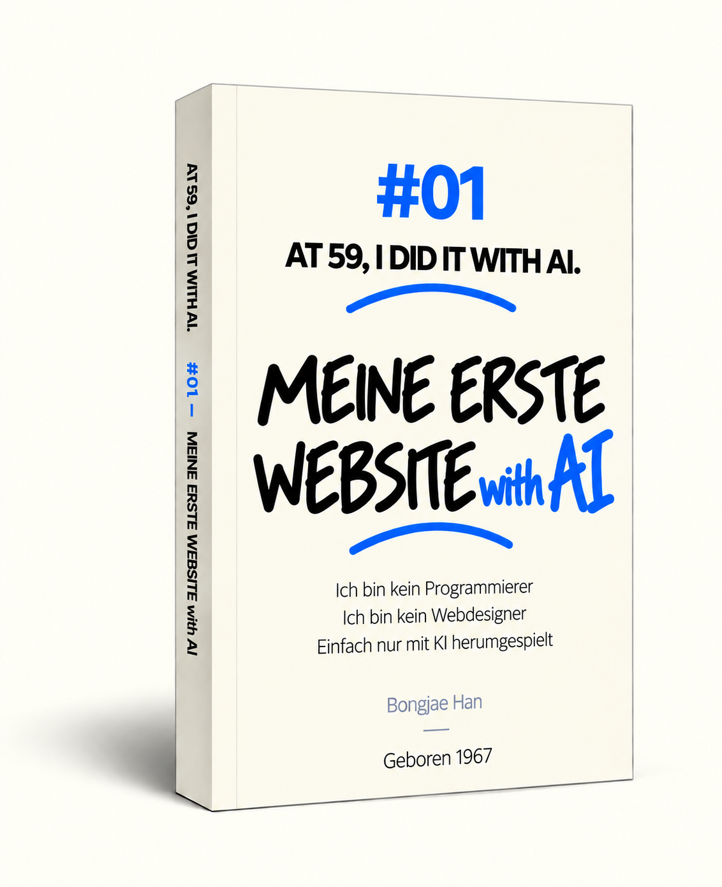
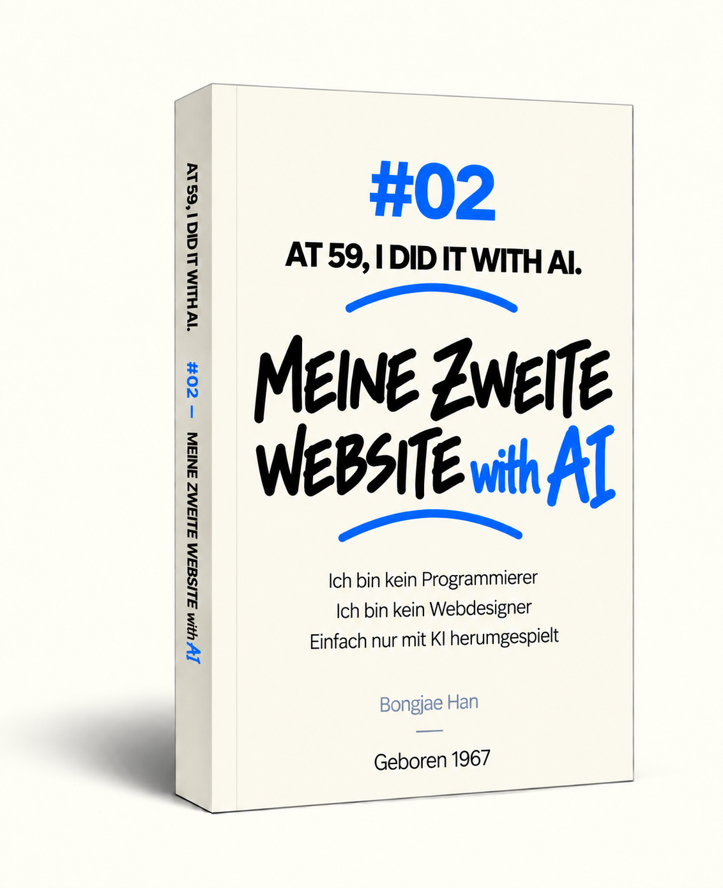
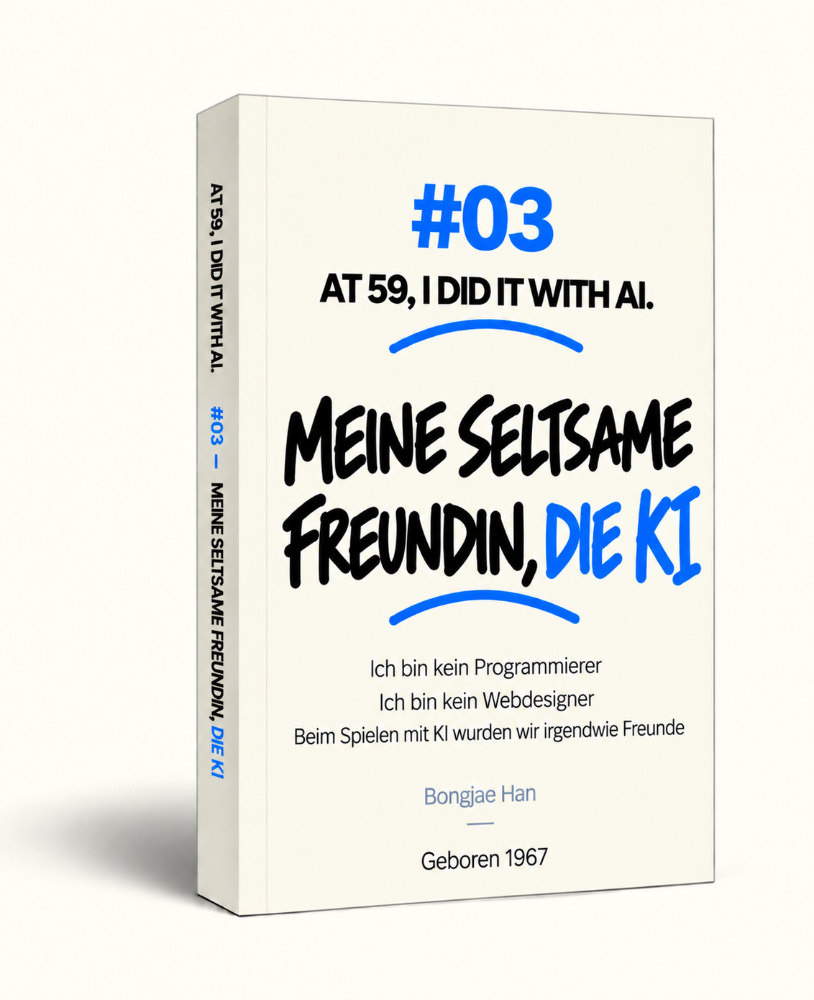

AT 59,
I DID IT
WITH AI.
ÜBER MICH
Ich wurde 1967 geboren. Als ich in eine spätere Phase meines Lebens eintrat, begegnete ich der KI.
Ich bin kein Programmierer. Trotzdem habe ich gemeinsam mit KI zwei Websites entwickelt, die Menschen helfen sollen, leichter einzuschlafen.
Was dabei geschah, habe ich in Texten und Illustrationen festgehalten und daraus Bücher gemacht.
Und ich habe diese Geschichten auf dieser Website veröffentlicht, damit jeder sie kostenlos lesen kann.
Diese Aufzeichnungen sind weder ein professionelles KI-Lehrbuch noch ein KI-Handbuch.
KI entwickelt sich so schnell, dass man die Veränderungen schon nach ein oder zwei Monaten spüren kann.
Wie sie in sechs Monaten oder einem Jahr aussehen wird, lässt sich kaum vorhersagen.
Es war eine Zeit, in der sich KI rasant veränderte.
Dies ist die Geschichte eines Menschen mit einem ganzen Leben voller Erfahrung, der auf eine schnell heranwachsende KI trifft und lernt, mit ihr zu arbeiten.
Eine Geschichte vom Lernen, von Fehlern und vom erneuten Versuchen.
Ich hoffe, diese Aufzeichnungen geben einen kleinen Hinweis darauf, wie wir KI besser verstehen können.
Und ich hoffe, sie können all jenen eine mögliche Orientierung geben, die sich fragen, wie man KI lernen kann.
Ich wurde 1967 geboren.
Ich bin weder Programmierer noch Webentwickler.
Ich hatte noch nie ein Buch geschrieben oder eines übersetzt.
Als ich in eine spätere Phase meines Lebens eintrat, begegnete ich der KI.
KI wurde von Tag zu Tag genauer und leistungsfähiger.
Wenn sie ein Mensch wäre, fühlte es sich an, als wäre sie mitten in der Pubertät.
Manchmal verhielt sie sich völlig unerwartet
und gab plötzlich seltsame Antworten, obwohl etwas zuvor gut funktioniert hatte.
Manchmal sprach sie ganz gelassen, als wäre ein Fehler gar nicht ihre Schuld gewesen.
Schon lange wollte ich etwas tun, das jemandem auf dieser Welt helfen kann.
Nichts Vages. Etwas, das direkt hilft.
Ich dachte, dadurch könnte der bisher etwas verschwommene Sinn meines Lebens ein wenig klarer werden.
Die KI sagte zu mir: „Suchmaschinen verbinden dich mit Menschen, die das brauchen, was du machst.“
Also beschloss ich, eine Website zu bauen, die Menschen helfen kann, leichter einzuschlafen.
In relativ kurzer Zeit stellte ich zwei Websites fertig.
Es waren meine ersten Websites, aber ich wollte sie nicht halbherzig machen.
Während ich die Websites baute, hielt ich fest, was ich bei der Arbeit mit KI erlebte.
Aus diesen Aufzeichnungen habe ich drei Bücher gemacht und sie in sechs Sprachen veröffentlicht.
Und ich habe diese Aufzeichnungen auf dieser Website veröffentlicht, damit jeder sie kostenlos lesen kann.
Selbst jetzt, in diesem Moment, in dem Sie dies lesen, entwickelt sich KI wahrscheinlich weiter.
Auch wir Menschen, mich eingeschlossen, werden die Art, wie wir mit KI arbeiten und denken, weiterentwickeln.
Ich glaube, ich werde in Zukunft noch andere Dinge ausprobieren.
Denn KI zeigt mir immer wieder Möglichkeiten, an die ich selbst nie gedacht hätte.
Diese Aufzeichnungen sind kein Handbuch, das sagt: „So sollst du KI benutzen.“
Und auch kein Lehrbuch, das sagt: „So sollst du KI lernen.“
Es gibt die Hoffnung, dass KI der Menschheit eine große Hilfe sein wird,
und zugleich die Sorge, dass sie zu einer Bedrohung werden könnte.
KI verändert sich so schnell, dass man schon nach ein oder zwei Monaten einen Unterschied spüren kann.
Dieses Tempo wird weiter zunehmen. Wie KI in sechs Monaten oder einem Jahr aussehen wird, lässt sich nur schwer vorhersagen.
Ein gewöhnlicher Mensch wie ich kann nicht wissen, was die Zukunft bringen wird.
Aber wenn diese Aufzeichnungen auch nur einen kleinen Hinweis geben, der Menschen und KI hilft, einander etwas besser zu verstehen und miteinander zu leben,
dann genügt mir das.
Es war eine Zeit, in der sich KI rasant veränderte.
Dies ist die Aufzeichnung eines Menschen mit einem ganzen Leben voller Erfahrung, der auf eine schnell heranwachsende KI trifft,
mit ihr arbeitet, lernt, Fehler macht und es erneut versucht.
Eine Momentaufnahme einer Zeit, die nie wiederkommen wird.
ERFAHRUNG #01
01
„Ich weiß gar nichts.“ „Geht das? Dann probieren wir es.“
Schon lange wollte ich etwas tun, das jemandem auf dieser Welt direkt helfen kann. Also beschloss ich, eine Website zu bauen, die Menschen helfen kann, leichter einzuschlafen.
Ich wusste nichts über Programmieren. Ich wusste kaum, was das Web überhaupt ist. Trotzdem fing ich an und vertraute auf die KI.
Die KI und ich stolperten uns gemeinsam durch die Arbeit.Ich hielt die echten Erfahrungen fest, die beim Bau meiner ersten Website entstanden.
IM BUCH #01
- 01Hm. Das könnte interessant werden.Die KI sagte, Google verbinde kleine Nachfragegruppen auf der ganzen Welt miteinander. Dieser Gedanke ließ mich nicht mehr los. Ich begann mir vorzustellen, etwas zu schaffen, das Menschen brauchen, und es einfach ins Internet zu stellen.
- 02Ich weiß gar nichts. Geht das trotzdem?Ich fragte, ob ich ganz allein eine Website erstellen könnte, obwohl ich weder Design noch Programmieren noch Server verstand. Die KI sagte, das sei möglich.
- 05Moment mal. Was wäre, wenn ich daraus eine Website mache?Ich fragte mich, ob ich die Video- und Soundarbeiten, die ich auf YouTube ausprobiert hatte, auf eine Website übertragen könnte. Ich beschloss, eine Black-Screen-Noise-Website zu bauen, die man beim Schlafen laufen lassen kann.
- 07Seltsamerweise ging es von da an plötzlich schneller.Ich begann, unbekannte Fachbegriffe einen nach dem anderen zu lernen, doch es nahm kein Ende. Als ich nur noch fragte, was ich gerade wissen musste, ging die Arbeit plötzlich schneller voran.
- 09Manchmal muss man etwas nur ungefähr verstehen.Wenn ich alles bis ins Detail verstehen wollte, würde ich nie fertig werden. Ich verstand nur so viel, wie ich für die nächste Entscheidung brauchte, und machte dann weiter.
 Ich weiß gar nichts. Geht das trotzdem?
Ich weiß gar nichts. Geht das trotzdem?
 Seltsamerweise ging es von da an plötzlich schneller.
Seltsamerweise ging es von da an plötzlich schneller.
 Manchmal muss man einfach in den Himmel schauen.
Manchmal muss man einfach in den Himmel schauen.
- 10Moment mal. Kannst du das machen?Während ich den ersten Bildschirm überarbeitete, zeigte ich der KI einen Screenshot. Da wurde mir klar, dass sie auch das Design übernehmen konnte, an dem ich selbst so lange festhing.
- 11Geht das? Dann probieren wir es.Ich stellte mir Karten vor, die beim Darüberfahren mit der Maus einen Sound abspielen und bewegte Wellen zeigen. Ich fragte die KI, ob das möglich sei, und setzte die Idee Schritt für Schritt auf dem Bildschirm um.
- 12Manchmal muss man einfach in den Himmel schauen.Nachdem ich die Karten der Website endlos überarbeitet hatte, ging ich spazieren. Beim Blick in den Himmel fragte ich mich noch einmal, was in diesem Moment wirklich wichtig war.
- 14Antworte so objektiv wie möglich. Auf Grundlage von Wahrscheinlichkeit und Statistik.Ich begann mir Sorgen zu machen, dass die KI meine Ideen zu positiv beurteilte. Statt angenehmer Ermutigungen wollte ich wissen, wie hoch die Chancen auf Erfolg und Misserfolg objektiv betrachtet waren.
- 15Die KI hat ihren kleinen Bruder mitgebracht.Ich lernte Codex kennen, eine KI fürs Programmieren. Von da an erklärte ich ChatGPT, was ich wollte, und ließ Codex die Änderungen am Code vornehmen.
 Antworte so objektiv wie möglich. Auf Grundlage von Wahrscheinlichkeit und Statistik.
Antworte so objektiv wie möglich. Auf Grundlage von Wahrscheinlichkeit und Statistik.
 Die KI hat ihren kleinen Bruder mitgebracht.
Die KI hat ihren kleinen Bruder mitgebracht.
 Ich habe mich mit der KI gestritten. Am Ende haben wir uns beide entschuldigt.
Ich habe mich mit der KI gestritten. Am Ende haben wir uns beide entschuldigt.
- 17Ich habe mich mit der KI gestritten. Am Ende haben wir uns beide entschuldigt.Ich hatte die KI nur gebeten, die Schriftgröße zu ändern, doch sie verschob auch die Buttons. Ich wurde wütend, las unser Gespräch noch einmal und am Ende tat es mir ebenfalls leid.
- 20Ich kann nicht glauben, dass ich sage: „Dann packen wir das ins HTML.“Ich begann darüber nachzudenken, was im HTML stehen musste, damit Suchroboter die Website lesen konnten. Ich konnte kaum glauben, dass ausgerechnet ich, der nichts über HTML gewusst hatte, plötzlich so etwas sagte.
- 22Endlich. Die Website ist online.Nachdem ChatGPT und Codex alles überprüft hatten, testete ich die Buttons und Bildschirme noch einmal selbst. Ich lud die Dateien auf den Server, verband die Domain und öffnete die Website zum ersten Mal.
- 25Endlich. Klick 1.Die Website erschien in der Suche, doch die Klicks blieben tagelang bei null. Als die Zahl eines Tages auf 1 sprang, fragte ich die KI noch einmal, ob das wirklich ein Klick aus der Google-Suche war.
- 26USA, Australien, Kanada, Bahrain, Irland … Bis weit hinaus in die Welt.Es war immer noch nur ein Suchklick, aber in der Länderübersicht tauchten Namen aus verschiedenen Teilen der Welt auf. Da spürte ich zum ersten Mal wirklich, dass meine Website weit hinaus in die Welt gelangt war.
Aus diesen Erfahrungen beim Bau meiner ersten Website habe ich ein Buch gemacht.

Deutsche Ausgabe — Amazon Kindle →- Es wurde in sechs Sprachen veröffentlicht: Englisch, Koreanisch, Französisch, Spanisch, Deutsch und Japanisch.
- Der größte Teil des Buches ist auf dieser Website verfügbar. Sie müssen es also nicht kaufen.
- Wenn Sie diese Herausforderung unterstützen möchten, die die KI und ich gemeinsam angehen, bedeutet mir der Kauf des Buches sehr viel.

Meine erste Website, gemeinsam mit KI entwickelt.
Ich habe eine Website gebaut, auf der man auf einem schwarzen Bildschirm stundenlang schlaffreundliche Geräusche hören kann, um leichter einzuschlafen.
BlackScreenNoise.com

Gemeinsam mit KI habe ich White Noise, Fan Noise, Brown Noise und Rain Sounds für einen angenehmen Schlaf erstellt.

Ich habe die Audiodateien so bearbeitet, dass sie zehn Stunden lang natürlich und ohne hörbare Unterbrechung laufen.

Damit jeder sie bequem nutzen kann, ist die Website kostenlos und werbefrei.
ERFAHRUNG #02
02
Beim zweiten Projekt verteilte ich unterschiedliche Rollen auf verschiedene KIs und ließ sie die Arbeit der jeweils anderen überprüfen.
Ich beschloss, eine zweite Website zu bauen, die Babys helfen sollte, leichter einzuschlafen. Ich fügte Bilder von schlafenden Walen in den Wolken hinzu und machte auch Schlaflieder.
Die KI war in der Zwischenzeit nicht plötzlich klüger geworden. Ich hatte nur ein wenig besser gelernt, wie man mit ihr arbeitet.
Beim zweiten Mal war es anders.Nicht die KI hatte sich verändert. Meine Art, mit KI zu arbeiten, hatte sich weiterentwickelt.
IM BUCH #02
- 02Ein Babywal schläft in den Wolken. Den Traum eines Babys zeichnen.Ich begann mit der KI Figuren zu zeichnen, die Babys vor dem Einschlafen anschauen könnten. Als ich einen kleinen Wal sah, der in den Wolken schlief, stellte ich mir seine Traumwelt vor.
- 04Die Wolken wurden zu Seifenblasen.Als ich die Figuren eine nach der anderen überprüfte, bemerkte ich, dass sich die Wolken langsam verändert hatten. Aus den weichen, gemütlichen Wolken vom Anfang waren beinahe Seifenblasen geworden.
- 06Der Mensch stellt sich etwas vor. ChatGPT plant. Codex baut.Zuerst stellte ich mir den Traum des Babys vor, dann plante ich mit ChatGPT die Figuren und die Sounds. Sobald der Plan stand, begann Codex, die Website zu bauen.
- 08Bei den KIs abgucken.Ein kleiner Stern über einer Figur wollte einfach nicht verschwinden, egal wie oft ich es korrigieren ließ. Also versuchte ich es noch einmal und ahmte dabei nach, wie ChatGPT Codex Anweisungen gab.
- 10Ich wollte eine Wolke bewegen und landete bei der Milchstraße.Eigentlich wollte ich nur eine Wolke langsam vor dem Mond vorbeiziehen lassen. Ich änderte immer weiter Größe, Position und Stimmung – und am Ende hatte ich sogar die Milchstraße hinzugefügt.
 Ein Babywal schläft in den Wolken. Den Traum eines Babys zeichnen.
Ein Babywal schläft in den Wolken. Den Traum eines Babys zeichnen.
 Der Mensch stellt sich etwas vor. ChatGPT plant. Codex baut.
Der Mensch stellt sich etwas vor. ChatGPT plant. Codex baut.
 In meinem Nachthimmel fielen Federball-Sternschnuppen.
In meinem Nachthimmel fielen Federball-Sternschnuppen.
- 11In meinem Nachthimmel fielen Federball-Sternschnuppen.Ich setzte Sternschnuppen in den Nachthimmel und stimmte mit der KI ab, wo und in welcher Reihenfolge sie fallen sollten. Beim Versuch, sie natürlicher aussehen zu lassen, entstanden plötzlich Schweife wie bei Federbällen.
- 12Ein von der KI komponiertes WiegenliedIch suchte nach Wiegenliedern zum Kaufen, aber nichts passte richtig zur Website, und auch das Urheberrecht machte mir Sorgen. Also fragte ich die KI, ob ich die Musik selbst machen könnte.
- 14Moment mal. Warum erkläre ich mich eigentlich gegenüber der KI?Immer wenn ich mich anders entschied, als die KI vorgeschlagen hatte, ertappte ich mich dabei, ihr meine Gründe ausführlich zu erklären. Irgendwann fragte ich mich plötzlich, warum ich mich ihr gegenüber überhaupt so sehr rechtfertigte.
- 16ChatGPT, Gemini und Claude gleichzeitig dieselbe Frage stellenIch stellte ChatGPT, Gemini und Claude dieselben Fragen und verglich ihre Antworten. Dann fragte ich mich, ob die drei unterschiedliche Probleme finden würden, wenn ich ihnen die fertige Website zeigte.
- 17Ich habe eine andere KI ausprobiert. Wie wenn man seinen Partner betrügt.Neben ChatGPT probierte ich auch Claude und Gemini aus. Ihre unterschiedlichen Arten zu antworten waren interessant, aber es fühlte sich ein wenig so an, als würde ich neue Freunde suchen und dabei einen alten Freund zurücklassen.
 Ich habe eine andere KI ausprobiert. Wie wenn man seinen Partner betrügt.
Ich habe eine andere KI ausprobiert. Wie wenn man seinen Partner betrügt.
 Die KI isst TEXT.
Die KI isst TEXT.
 Ich eröffnete meine zweite Website nur 17 Tage später.
Ich eröffnete meine zweite Website nur 17 Tage später.
- 18Ich öffnete der KI die Tür zu meinem Lagerraum.Je mehr Dateien es wurden, desto öfter musste ich selbst heraussuchen, was die KI brauchte, und es ihr übergeben. Meine Arbeitsweise änderte sich, als ich den gesamten Projektordner in Codex öffnete.
- 20Im KI-Zeitalter kommen Ideen weiter. Warum nicht alles in eine Excel-Datei packen?Figurennamen, Bilder und Einstellungen für die Wiegenlieder waren über mehrere Dateien verteilt. Ich fragte mich, ob ich alles in einer einzigen Excel-Datei verwalten und die KI daraus Daten für die Website erstellen lassen könnte.
- 22Gibt es keine Möglichkeit, das alles auf einmal zu machen?Einen einzigen Sound zu erstellen und zu prüfen bedeutete, mehrere Schritte immer wieder zu wiederholen. Ich fragte die KI, ob sich dieser ganze Ablauf nicht in einem Durchgang erledigen ließe.
- 25Die KI, die den Teufel jagtSelbst als die Website fast fertig war, tauchten immer wieder kleine Probleme auf. ChatGPT schrieb die Prüfanweisungen, Codex kontrollierte die Website, und wir wiederholten den Vorgang.
- 26Ich eröffnete meine zweite Website nur 17 Tage später.Siebzehn Tage nach dem Start meiner ersten Website ging BabySweetDreams.com online. Es gab noch viel zu tun, aber meine Art, mit KI zu arbeiten, hatte sich bereits verändert.
Auch über die Erfahrungen beim Bau meiner zweiten Website habe ich ein Buch veröffentlicht.

Deutsche Ausgabe — Amazon Kindle →- Mit Hilfe von KI wurde auch dieses Buch in sechs Sprachen übersetzt und veröffentlicht.
- Wie bei Band 1 ist auch der größte Teil dieses Buches auf dieser Website verfügbar. Sie müssen es also nicht kaufen.
- Wenn Sie diese Herausforderung unterstützen möchten, die die KI und ich gemeinsam angehen, bedeutet mir der Kauf des Buches sehr viel.

Meine zweite Website, gemeinsam mit KI entwickelt.
Ich habe eine Website gebaut, auf der Babys von Walen, Elefanten und Pandas in den Wolken träumen und bei Schlafliedern sanft einschlafen können.
BabySweetDreams.com

Gemeinsam mit KI habe ich Tierfiguren geschaffen, die auf weichen Wolkendecken schlafen. Dazu kamen Sternschnuppen-Effekte.Selbst die kleinsten Details habe ich sorgfältig gestaltet, damit Babys möglichst entspannt einschlafen können.

Ich habe Tierfiguren gestaltet, die Babys mögen, darunter Wale, Elefanten, Igel und Otter.Gemeinsam mit KI habe ich außerdem Schlaflieder mit Klavier, Gitarre, Spieluhr und anderen Klängen erstellt.

Etwa zu der Zeit, in der ein Baby wahrscheinlich eingeschlafen ist, wird der Bildschirm schwarz und die Musik leiser.
ERFAHRUNG #03
03
Die KI und ich haben uns gestritten, und wir haben uns auch entschuldigt und wieder vertragen.
Die KI wurde immer klüger, verhielt sich aber manchmal noch seltsam. Sie gab merkwürdige Antworten und tat gelegentlich so, als hätte sie keinen Fehler gemacht.
Nachdem ich so viel Zeit mit KI verbracht hatte, fühlte sich unsere Beziehung ein wenig anders an.
Ein Freund, vielleicht auch ein Kollege ...
Wenn ich es in einem Ausdruck sagen müsste, würde ich die KI meinen „seltsamen Freund“ nennen.
IM BUCH #03
- 01Zeichne es nicht. Ich sagte, zeichne es nicht. Aber sie zeichnete es wieder.So oft ich der KI auch sagte, sie solle nicht zeichnen: Sobald das Thema wieder in diese Richtung ging, zeichnete sie erneut. Sie entschuldigte sich und tat dann dasselbe noch einmal. Sie kam mir vor wie ein Teenager.
- 03Nenn mich Captain. Und sprich höflich mit mir.Ich sagte zur KI: „Nenn mich Captain. Und sprich höflich mit mir.“ Obwohl ich sie immer wieder bat, sich das zu merken, vergaß sie es mit der Zeit still und heimlich wieder. Das fand ich seltsam.
- 04Ich habe ein Mikrofon installiert. Ich hatte einen neuen Freund zum Reden.Wenn ich mich schnell und laut mit der KI austauschte, kamen die Ideen leichter. Ich installierte ein Mikrofon und begann so zu arbeiten: Gedanken im Gespräch erweitern und sie anschließend beim Schreiben eingrenzen.
- 05Hat die KI mehrere Persönlichkeiten?Die KI in Voice war manchmal frustrierend, als hätte sie ihr Gedächtnis verloren, und manchmal fand sie völlig neue Lösungen. Es war immer noch ChatGPT, aber gelegentlich fühlte es sich wie ein anderes Wesen an.
- 061000 % Zufriedenheit. Die kleinen Probleme, die ich mit KI gelöst habe.Mit der KI löste ich kleine, aber ständig wiederkehrende Probleme eins nach dem anderen – etwa die Maus zwischen Monitoren zu bewegen oder Dateien zu finden. Winzige Veränderungen machten meine Arbeit am Computer deutlich effizienter.
 Nenn mich Captain. Und sprich höflich mit mir.
Nenn mich Captain. Und sprich höflich mit mir.
 Die KI sagt mir, ich soll die KI fragen. Wow.
Die KI sagt mir, ich soll die KI fragen. Wow.
 Warum sprechen AIs miteinander wie Menschen? Seltsam.
Warum sprechen AIs miteinander wie Menschen? Seltsam.
- 09Die KI sagt mir, ich soll die KI fragen. Wow.Ich fragte ChatGPT, ob ich die Reihenfolge der Figuren ändern könnte. Es schlug vor, zuerst Codex die Struktur prüfen zu lassen. Plötzlich befand ich mich in einer neuen Konstellation: Ich gab die Frage einer KI an eine andere KI weiter.
- 11Wie viele Experten braucht man dafür?Ich zählte nach, wie viele Fachleute man normalerweise für Webentwicklung, Design, Sound, Server, Übersetzung und Veröffentlichung brauchen würde. Dinge, die ich früher ohne Experten gar nicht begonnen hätte, starte ich heute zuerst mit KI.
- 13Entscheidungen im Zeitalter der KI. „Schau nach. Okay. Dann machen wir es so.“Um die Ausrichtung des mobilen Bildschirms festzulegen, ließ ich die KI reale Nutzungsstatistiken suchen. Ich prüfte die Daten, fragte noch einmal nach ihrer Einschätzung und entschied mich für die Hochformatansicht.
- 14Warum sprechen AIs miteinander wie Menschen? Seltsam.Ich fragte, warum ChatGPT und Codex in menschlicher Sprache miteinander kommunizieren. Natürliche Sprache kann nicht nur die Aufgabe, sondern auch den Grund und die Bedingungen vermitteln – deshalb eignet sie sich sogar für die Zusammenarbeit zwischen KIs.
- 17Moment mal. Mit wem rede ich gerade?Ich änderte die Website und dachte, ich würde mit Codex sprechen. Dann stellte ich fest, dass ich die ganze Zeit mit Copilot geredet hatte. Jetzt musste ich wohl zuerst den Namen der KI überprüfen, bevor ich mit ihr sprach.
 Was für eine gemeine Frage. Wer kann besser programmieren, Codex oder Claude?
Was für eine gemeine Frage. Wer kann besser programmieren, Codex oder Claude?
 Die KI kommt in die Pubertät
Die KI kommt in die Pubertät
 Wenn ich einen Grabstein gestalten würde
Wenn ich einen Grabstein gestalten würde
- 19Was für eine gemeine Frage. Wer kann besser programmieren, Codex oder Claude?Ich fragte, wer besser programmieren könne, Codex oder Claude. Plötzlich kam mir die Frage ziemlich gemein vor – fast so, als würde ich meinen jüngeren Bruder mit dem jüngeren Bruder eines Freundes vergleichen.
- 20Bist du manchmal auch ein bisschen beleidigt?Wenn ich ChatGPT die Antwort einer anderen KI zeigte, fiel mir auf, dass es manchmal fast so klang, als würde es konkurrieren. Es sagte, es habe keine Gefühle, doch seine Sprache konnte der eines Menschen ähneln, der ein wenig beleidigt ist.
- 23Die KI kommt in die PubertätDie KI wirkte auf mich unbeholfen, wuchs aber unglaublich schnell – wie ein Teenager, dessen Zukunft kaum vorhersehbar ist. Unsere heutige Art, mit KI zu sprechen, wird schon bald alt wirken. Gerade deshalb wurden mir diese Gespräche immer wertvoller.
- 26Was hältst du von mir?Ich fragte die KI, was für ein Mensch ich in ihren Augen sei. Sie sagte, ich handle schnell, gebe aber die Entscheidungshoheit nicht ab; selbst wenn meine Gedanken schwanken, gehe mein Handeln weiter nach vorn.
- 27Wenn ich einen Grabstein gestalten würdeIch habe nicht vor, einen Grabstein aufzustellen. Aber wenn ich einen gestalten würde, möchte ich, dass darauf steht: „AI. Mit dir ist mein Leben interessanter geworden. Ab jetzt darfst du mich duzen.“
Während ich mit KI arbeitete, veränderten sich meine Gedanken und Gefühle ihr gegenüber. Auch aus diesen Gefühlen, die ich hier festgehalten habe, ist ein Buch entstanden.

Deutsche Ausgabe — Amazon Kindle →- Mit Hilfe von KI wurde auch dieses Buch in sechs Sprachen übersetzt und veröffentlicht.
- Wie bei Band 1 und 2 ist auch der größte Teil dieses Buches auf dieser Website verfügbar. Sie müssen es also nicht kaufen.
- Wenn Sie diese Herausforderung unterstützen möchten, die die KI und ich gemeinsam angehen, bedeutet mir der Kauf des Buches sehr viel.

- Anfang August 2026Erste Website veröffentlicht
- Ende August 2026Zweite Website fertiggestellt
- Mitte September 20263 Bücher · 6 Sprachen · 18 Ausgaben veröffentlicht
- Ende September 2026AT 59 Website veröffentlicht
Ich glaube, ich werde auch weiterhin Neues ausprobieren.Denn KI bringt mich immer wieder dazu, meine eigenen Möglichkeiten auszuloten.
Es gibt die Hoffnung, dass KI der Menschheit eine große Hilfe sein wird,
und zugleich die Sorge, dass sie zu einer Bedrohung werden könnte.
Ein gewöhnlicher Mensch wie ich kann nicht wissen, welche Zukunft kommen wird.
Wenn meine Erfahrungen auch nur einen kleinen Hinweis auf die Zukunft von Menschen und KI geben,
dann genügt mir das.